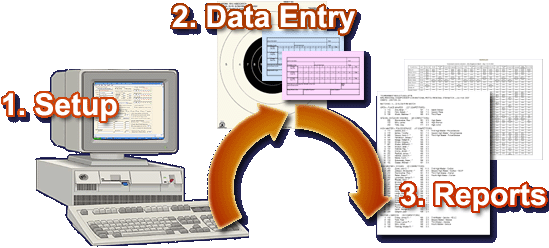
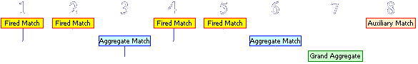

Competition
Administration as Easy as 1-2-3
 
The massive
amount of work involved in the
administration and scorekeeping of a
sizeable shooting competition is
simplified with Tournament. Not only is
the entire process streamlined and very
quick but the results will rival what you
have seen at any competition
before.
Any
Discipline, Any Competition Structure

It may be
difficult to believe that one program can
handle the stat office work for multiple
disciplines. Not only is it true, but the
extensive parameters specific to each
discipline can be saved and retrieved as
a configuration file. Here are
some of the parameters you may control:
- The Classification system may be
changed to comply with a
particular discipline:
- Marksman, Sharpshooter,
Expert, Master and
High-Master (Conventional
Pistol, HP & SB
Rifle, etc.)
- AA, A, B, C, D (Action
Pistol, etc.)
- Master, AAA, AA, A, B (Silhouette,
etc.)
- The Categories that sub-divide
the Classes may be changed as
well. Choose from:
- Civilian, Police and
Service (Conventional
Pistol, etc.)
- Junior, Civilian and
Service (Smallbore
Rifle, etc.)
- Equipment Class (High-Power
Rifle, Silhouette, Action
Pistol, etc.)
- None at all
- The Framework of the Competition
can be built any way you like.
Break up your matches with
whatever Aggregate Matches you
choose. Tack on additional
matches such as "hardball"
or "special target"
matches that will not get added
into the Grand Aggregate. Bonus
prizes may be optionally offered
using the Lewis Class system to
divide the purse.
- All financial functions are fully
supported: Competitor Match Fees,
Targets and other Expenses, NRA
and State Sanction Fees, Award
Payback, and much more.
- Easily set up a complex Award
Payback Schedule exactly as it is
defined in any match program. The
Payback figures can be based on
Total Revenue received or thay
can be Fixed Dollar Amounts.
Data
Entry and Manipulation

The usually
tedious chores of collecting competitor
entries, making squadding assignments,
entering scores as they are turned in,
and breaking apparent ties ... are all a
piece of cake wtih Tournament.
- An uncluttered entry form allows
new competitors to be entered
quickly and efficiently.
- Competitors can be assigned to
relays and targets automatically
as they are added.
- Returning competitors are added
with the single click of a mouse
- their information pulled from
an archive of past competitors.
- Adding a competitor or editing an
existing one is as simple as
double-clicking on the screen -
click on a blank line to add and
on an existing record to edit.
- Entering scores is fast and easy
- done directly on the screen -
no time-consuming forms popping
up to fill out.
- Data is checked for integrity as
it is entered - for example, a
score that has more x-counts than
is possible will produce a
warning message.
- Aggregate Match totals are shown
in the status bar at the bottom
of the screen allowing you to
double-check the scorer's
addition or the accuracy of your
typing.
- Apparent ties in Aggregate and
Grand Aggregate Matches are
broken automatically by
Tournament using rules that you
preset.
- Apparent ties in Fired Matches
are broken with an automated tool
- it locates these ties
automatically for you and lets
you determine the correct rank of
the tied competitors based on
their scorecards.
An Amazing Variety and
Quality of Reporting Options
Time and
time again, users of Tournament
proclaim that its greatest feature is its
tremendous reporting power.
- Reports are sortable by a variety
of fields in real-time right on
the screen before you print them.
- A squadding report lists all
competitors sorted by relay and
target number.
- There are two types of Match
Bulletins, both concise and very
readable, but distinctly
different.
- Individual Match Bulletin
- a detailed bulletin
with all competitors
divided by award
categories in list form
- Summary Match Bulletin -
a collection of all
matches and competitors
in table form
- The Awards Summary report lists
all competitors, breaks down each
cash award won, plus gives an
Award Total.
- The Revenue/Expense Report shows
all revenue and expenses for the
competition and calculates a
bottom line.
- The NRA Score Report lists all
competitors with their addresses,
number of shots fired, and final
score. This is the report that is
to be sent to the NRA
Competitions Division.
- There are two types of Label
Sheets that you may print for all
of your competitors.
- Scorecard Labels with the
Competitor's Squadding
assignment and other
information.
- Mailing Labels for the
envelopes enclosing the
Final Match Bulletins to
be sent to all of the
Competitors.
- Match Bulletins and Competitor
Listings may be exported as an
Excel spreadsheet for permanent
storage or to be used by a
different computer program.
- With an inexpensive PDF-maker program like BCL's easyPDF or PrimoPDF, you can turn any report into an Adobe Acrobat PDF file for easy storage and distribution.
|